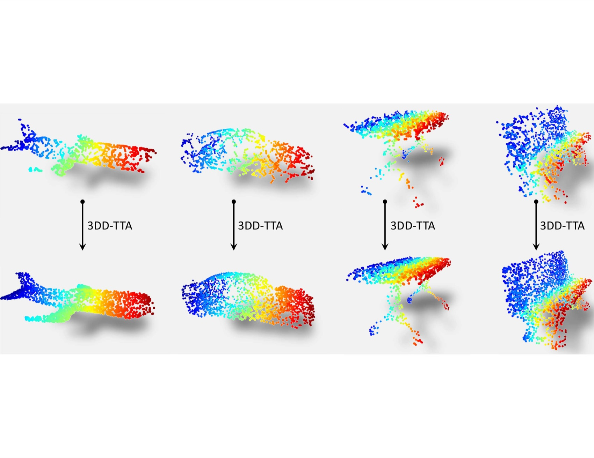
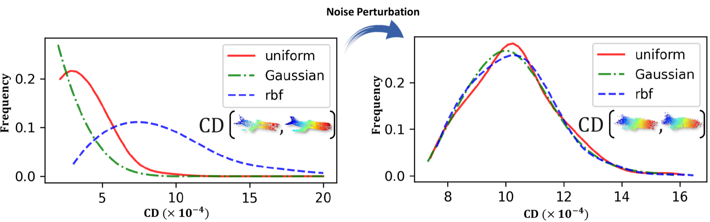
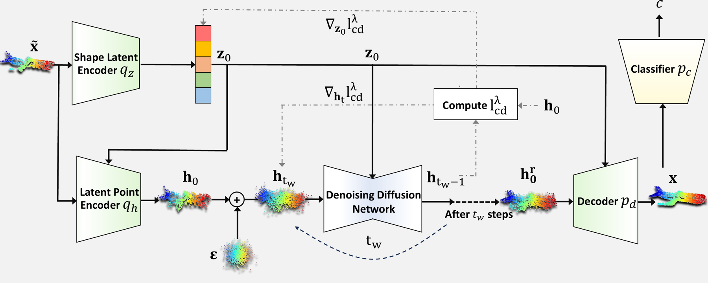
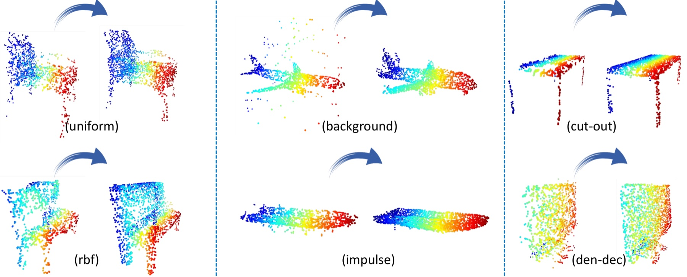
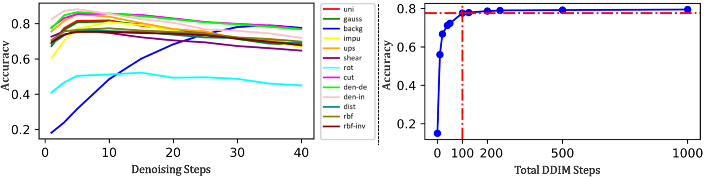

WACV 2025 · 3D POINT CLOUD / TEST-TIME ADAPTATION
用去噪扩散模型做 3D 点云的测试时适配
Test-Time Adaptation of 3D Point Clouds via Denoising Diffusion Models
测试点云一旦被传感器噪声、背景杂点或密度变化破坏，源模型就会失准。这篇论文不更新网络权重：它把受损点云编码进 LION 的分层隐空间，加噪后用源域预训练的隐扩散模型反噪，同时用「选择性 Chamfer 距离」的梯度修正形状隐向量与隐点，最后解码回去交给原分类器。整条链路训练自由、单样本、在线。
- 原文
- arXiv:2411.14495v1（2024-11-21，唯一版本，无附录）
- 会议
- WACV 2025（录用；arXiv 注释写明 Accepted to WACV 2025）
- 规模
- 正文 5 节 · 12 公式 · 5 图 · 4 表 · 1 算法 · 58 文献
本页是 arXiv:2411.14495v1 全文的中英对照翻译：英文段落取自 arXiv LaTeX 源码（PaperForReview.tex），公式、表格数字与图注按源码核对，图片由源码 PDF 矢量图转成 PNG。需要说明一处缺省：正文多处引用「附录 A（损坏函数细节）」「附录 B（SCD 参数分析）」「附录 D（更多定性结果）」，但该 arXiv 版本的源码与 PDF 都不含附录章节，因此本页也没有附录，涉及的细节只能标注为原文缺省，不作补写。原文采用 IEEE 数字引用制，正文引用统一写成方括号编号并链接到文末条目；连续引用合并为一个方括号（如 [27]、[29]），编号顺序与原文 .bbl 完全一致。
原文：arXiv 摘要 ↗ · 原文 PDF ↗ · 官方代码 ↗ · 返回论文条目
读之前：这条链路里每一步在做什么
这一段是译者注，不是原文。它只做一件事：让你在读到公式 (1)–(12) 时，知道每个量对应流程里的哪一步，并看懂表 1–表 3 的缩写表头。
- 两条编码路径：LION 的 VAE 有分层编码器。 把整片点云压成一个全局向量 （形状隐向量，shape latent）， 再把点云映射成与点云同构的隐点 （每个点 4 维：xyz + 1 个特征）。解码器 用这两者还原点云。所以「适配」在本文里发生在隐空间，不发生在分类器上。
- 加噪是为了「忘掉」损坏方式：不同损坏（均匀噪声、背景杂点、RBF 扭曲……）把隐点推到不同位置。把隐点加噪到第 步后，各种损坏留下的痕迹都被高斯噪声盖住，隐点的分布重新重叠（图 2），此时再反噪就只会朝着源域流形走。
- DDIM 反噪 + 两个梯度修正：每一反噪步先用 估计噪声、算出「预测的原始隐点」（公式 (10)），再用它和真正（受损）隐点 之间的选择性 Chamfer 距离 (11) 求梯度：一个梯度修正隐点本身（公式 (9) 的 项），一个梯度修正形状隐向量 （公式 (12)），因为受损点云给出的 作为条件信号并不可靠。
- 为什么是「选择性」：原始的 本身就带着损坏，要求完全对齐会把损坏也一起学回来。SCD 只对排序后距离最小的 求和（论文取 ），相当于只要求「粗粒度一致」，把离群点的影响压掉。
- 两个超参数： 控制形状隐向量的更新步长， 控制隐点更新的步长，网格搜索后都取 0.01；反噪总步数 取 5（DDIM 总步数 100）。
表格缩写速查（译者注）
| 缩写 | 含义 |
|---|---|
| uni | 均匀噪声（uniform noise），在点云包围盒内均匀采样扰动点 |
| gauss | 高斯噪声（Gaussian noise） |
| back | 背景点（background），加入大量与物体无关的背景点云 |
| impu | 脉冲噪声（impulse noise），随机把点替换成极端值 |
| ups | 上采样（upsampling），插值加密点数 |
| rbf | 径向基函数扭曲（radial basis function distortion），用 RBF 变形点云表面 [8] |
| rbf-i | rbf 的逆向版本（原文表头写 rbf-i，未给出全称，按 ModelNet40-c 的 rbf_inv 理解，属译者推断） |
| den-d / den-i | 密度减少 / 密度增加（原文表头未给全称；正文提到 density-based corruptions 与 density increase，故按此理解，属译者推断） |
| shear | 剪切变形 |
| rot | 旋转（rotation） |
| cut | 裁切（cut-out），挖掉一部分点 |
| dist | 扭曲（distortion），对点做非线性扰动 |
| occ | 遮挡（occlusion），模拟被其他物体挡住 |
| lidar | 模拟 LiDAR 扫描造成的稀疏化 |
表中「密度减 / 密度增」「RBF 逆」的全称是据上下文推断，原文与源码注释都没有展开；其余 12 种损坏名称在 ModelNet40-c 基准中是标准写法。
术语对照（译者注）
- 测试时适配（TTA）
- 只在推理阶段用目标域（这里是被损坏的点云）样本调整模型或其输入，不访问源域训练数据。
- 源域 / 目标域
- 是训练点云所在的分布（ShapeNet）， 是测试时出现的受损分布。
- 训练自由（training-free）
- 本文的用法特指：不改任何网络参数、不做反向传播，只在隐空间做前向反噪与基于梯度的隐变量更新。
- Chamfer 距离（CD）
- 两个点集之间的双向最近点平方距离均值，是点云重建的常用度量；本文用它衡量「受损隐点」与「预测原始隐点」的接近程度。
- SCD（选择性 Chamfer 距离）
- 只统计排序后最小的 比例距离的 CD，记作 ，用来抵抗离群点。
- DDIM
- 去噪扩散隐模型，确定性、可跳步的采样器；本文用 100 个总步长、每次跳 10 步。
- LION
- 分层隐扩散点云生成模型（VAE + 两个隐扩散网络），本文直接复用它在 ShapeNet 上的预训练权重。
- shape latent / latent points
- 形状隐向量 （全局形状码）与隐点 （点云结构的局部隐表示）。
摘要
English original
3D 点云的测试时适配（TTA）对于缓解真实场景中训练样本与测试样本之间的差异至关重要，尤其是在处理受损点云时。以 LiDAR 数据为例，传感器故障或环境因素都会造成域间隙。由于为每一种可能的变化都训练一个模型并不现实，在线地把模型适配到这些分布偏移上十分关键。现有方法通常基于自监督学习或伪标签来微调预训练模型，这会随时间逐渐遗忘宝贵的源域知识，并降低对后续测试的泛化能力。本文提出一种新的 3D 测试时适配方法，称为 3DD-TTA，即 3D Denoising Diffusion Test-Time Adaptation。该方法采用一种扩散策略，把输入点云样本适配到源域，同时保持源模型参数不变。它先用变分自编码器（VAE）把受损点云编码为形状隐向量（shape latent）与隐点（latent points）。这些隐点被高斯噪声破坏，随后经历一个去噪扩散过程。在该过程中，形状隐向量与隐点都会被更新以保持保真度，引导去噪生成与源域更一致、更贴近的样本。我们在 ShapeNet 数据集上做了大量实验，并在 ModelNet40 与 ScanObjectNN 上考察其泛化性，取得了 state-of-the-art 结果。代码已发布于 https://github.com/hamidreza-dastmalchi/3DD-TTA。
English original
受损点云经 3DD-TTA 还原成可分类的形状

English original
1 引言
English original
点云处理近来受到广泛关注，也是许多计算机视觉应用的关键 [27]、[29]、[53]、[55]、[13]。尽管该领域已取得显著进展 [27]、[29]、[53]、[57]，但大部分研究仍集中在训练样本与测试样本之间域间隙很小的受控环境。然而，真实场景中的测试样本常常偏离训练域。例如，LiDAR 点云数据可能被传感器故障或环境因素破坏，形成域间隙，进而导致性能下降。此外，3D 数据中的分布偏移差异极大，为点云在测试时可能出现的每一种变化都训练网络并不可行。因此，在测试阶段以在线方式让模型高效适配不可预测的分布偏移至关重要。
English original
加噪让不同损坏的 CD 分布重叠：损坏无关性

English original
当前测试时适配的做法通常是在推理期间微调预训练源模型的参数。一些方法 [49]、[6]、[47] 采用伪标签，用测试样本生成的伪标签来调整源模型；另一些方法 [19]、[7]、[22] 则用自监督学习针对新的测试样本更新模型。然而，两类策略都面临同一个问题：它们可能一开始表现良好，却会随时间逐渐遗忘宝贵的源域知识，在漫长的 TTA 过程中造成误差累积。这会削弱模型的泛化能力，使其在后续测试样本上表现变差。
English original
与以往那些聚焦于更新源模型参数、并因此有遗忘风险的 TTA 方法 [49]、[6]、[47]、[19]、[7]、[22] 不同，[9]、[43]、[39] 提出了另一条路线：借助深度生成模型（例如去噪扩散模型（DDM）[12]、[37]）把输入测试图像适配到源域。这种做法在 2D 图像上已被证明有效 [9]、[43]、[39]、[26]，但把它用到 3D 点云上要困难得多，原因在于点云的无结构特性，以及去噪过程中保持其保真度的固有难度。尽管扩散模型在 2D TTA 上不断取得成功，此前还没有方法把这套框架推广到 3D 点云——本文是第一个。
English original
为此，我们提出一种新的、无需训练的（training-free）测试时适配方法，称为 3D Denoising Diffusion Test-Time Adaptation（3DD-TTA）。所谓无需训练，是指在测试阶段适配受损点云时不修改、也不微调任何网络参数。具体来说，我们的方法使用一个先在源域上训练好的隐扩散模型，把受损点云适配回源域（见图 1）。为了提升时间效率，我们采用去噪扩散隐模型（DDIM）[38] 跳过部分去噪步，从而降低适配方法的计算开销，而性能没有明显损失。由于点云通常不含高频内容，步数少一些也足以维持性能。在隐空间里执行反向扩散之前，我们先给隐点（由 VAE 网络得到）加上高斯噪声，以降低它们对数据分布变化的依赖（见图 2）。为了引导去噪过程、避免生成不一致的点云，我们采用一种改造过的 Chamfer 距离，称为选择性 Chamfer 距离（SCD）。SCD 在每个时间步度量原始隐点与预测隐点之间的差异，并按照该距离的梯度做更新。这种做法在容纳隐点变化的同时提升了保真度。最终我们得到一个更贴近源域的精细点云，保留了准确分类所必需的关键特征。这种对齐让源分类器能更有效地利用其预训练知识，从而在分类时获得更高的准确率与可靠性。
English original
总结起来，本文的贡献是：
English original
（1）本文提出一种新的、无需训练的方法 3D Denoising Diffusion Test-Time Adaptation（3DD-TTA），它适配的是受损点云，而不是网络参数。据我们所知，我们是首个把去噪扩散模型用于 3D 点云 TTA 的工作。
English original
（2）我们通过对隐点注入高斯噪声，生成与损坏无关（corruption-irrelevant）的隐点，作为预训练隐扩散模型的输入。该模型随后通过反向过程迭代地去噪这些被扰动的隐点，有效地把它们恢复到与源域特征一致。
English original
（3）我们提出一种改造过的 Chamfer 距离，称为选择性 Chamfer 距离（SCD），用于在反向扩散过程中提升保真度。SCD 允许对隐点与形状隐向量做有针对性的更新，从而在保持保真度的同时允许必要的变化。该机制提升了模型处理受损数据的适应能力，带来更准确的重建。
English original
2 相关工作
English original
点云处理
English original
PointNet [28] 是 Qi 等人的开创性工作，标志着用多层感知机（MLP）网络处理 3D 点云的开始。但这一早期方法没有捕捉到输入数据中复杂的局部结构。为克服该局限，后续提出了 PointNet++ [30] 等改进，用层次化特征提取更好地捕获局部信息。在此基础上，多项研究 [18]、[54]、[25]、[32]、[51]、[15]、[5]、[1]、[4] 提出各种卷积策略来提取局部信息。
English original
与此同时，另一些研究 [50]、[46]、[56] 把点云表示为图的顶点，从而可在空间域或谱域提取特征。例如，DGCNN [50] 在特征空间构图，并用 MLP 对每条边动态更新；PointGCN [56] 则用 k 近邻直接从点云构图，高效地捕获局部信息。
English original
扩散模型
English original
去噪扩散模型（DDM）[12]、[37] 是一类生成模型，通过系统地逆转前向扩散过程来合成数据。这个反向过程能有效地把含噪输入变成与原始数据分布高度一致的高质量输出。DDM 尤其以生成复杂图像与复杂数据形式的能力著称 [23]、[31]、[34]、[33]、[35]。把生成模型用于点云，为无监督表示学习提供了强有力的框架，可以有效地刻画数据分布。然而，3D 点云的扩散模型发展落后于图像领域的同类工作，主要原因是 3D 空间中点云的不规则采样模式带来挑战 [20]。尽管如此，已有少数面向 3D 点云的扩散模型被提出 [2]、[58]、[20]、[45]。LION 模型 [45] 的独特之处在于把扩散模型作用在分层隐空间上，把全局形状隐向量与局部隐点结合起来，以提升表达能力与性能。我们在 TTA 任务中使用了这个隐扩散模型，利用其分层框架来有效地适配 3D 点云。
English original
测试时适配
English original
测试时适配（TTA）在推理阶段把在源域训练好的模型适配到新的目标域，过程中不能访问源数据。常见策略是用无监督损失在无标签目标样本上微调，这类方法大多是为图像域适配设计的。TTT [41] 使用自监督代理任务；TENT [48] 通过最小化模型响应的熵来更新批归一化参数；SHOT [16] 同样最小化预测熵；TTT++ [19] 增加了一个带对比学习的自监督分支；MM-TTA [36] 通过模块内与模块间的方式融合多模态预测以生成伪标签；DSS [49] 用动态阈值与学习过程处理带噪伪标签。针对 3D 点云，也有若干专门设计的 TTA 方法：MATE [22] 用掩码自编码来抵抗 3D 点云中的分布偏移；Hatem 等人 [11] 用元学习做点云上采样；Point-TTA [10] 在推理时按实例适配模型参数以完成点云配准。与上述微调方法不同，[9] 的作者提出了一种数据驱动的 2D 图像 TTA 方法，使用 DDM。类似地，[43]、[39] 采用带结构引导的扩散模型来提升 2D 图像适配的泛化性。本文则提出一种用于 3D 点云的 TTA 新方法，利用带 3D 形状引导的隐扩散模型来应对不同的分布偏移。
English original
3 方法
English original
问题定义
English original
考虑受损点云，每个包含 个点 ，属于目标域 。我们有一个分类器 和一个扩散模型 ，二者都在来自源域 的原始点云 上训练，且 与 之间存在域间隙。测试时适配的目标是：在不访问源数据、也不修改分类器 的前提下，用 把受损数据适配回 ，从而提升分类器在这些数据上的准确率。
English original
3.1 预备知识
English original
去噪扩散模型（DDM）
English original
去噪扩散模型（DDM）[12]、[37] 是一类生成模型，它通过学习逆转一个前向扩散过程来建模数据分布 。该过程以马尔可夫方式逐步向数据中加入高斯噪声，模型则被训练成从这条含噪序列中恢复原始数据。前向扩散过程定义为：
English original
其中 表示扩散步数， 表示高斯转移分布， 构成方差调度（variance schedule）。选择 的目的是让链条在 步之后近似收敛到标准高斯分布，即 。根据马尔可夫链性质，对任意中间时间步 有：
English original
其中 ， 取自标准高斯分布。类似地，生成过程被建模为带可学习均值 的高斯转移：
English original
这里 通常是与方差调度相关的预定义常数，而 由一个去噪 U-Net（记作 ）参数化，二者有如下等价关系 [12]：
English original
去噪网络通过最小化数据 在 下负对数似然的变分上界来训练。该目标可以简洁地写成：
English original
面向 3D 点云的隐扩散模型
English original
本研究采用 [45] 提出的分层隐扩散模型（LION）作为 TTA 任务的骨干。LION 使用一个由两个分层编码器和一个解码器组成的 VAE 网络。第一个编码器记作 ，把输入点云 转成抽象隐向量 ，称为形状隐向量（shape latent）。随后，另一个编码器 把输入点云映射到具有点云结构的隐空间，表示为 ，称为隐点（latent points）。其中前三维表示 xyz 坐标，最后一维表示一个附加特征。此外，两个去噪扩散网络 与 分别对形状隐向量与隐点建模。最后，解码器 以形状隐向量与隐点为输入，把它们映射回点云。这个生成框架分两个阶段训练。在第一阶段，编码器与解码器被同时训练，以最大化数据对数似然上的变分下界：
English original
这里 与 分别表示施加在形状隐向量与隐点上的高斯先验。在第二阶段，两个隐扩散模型在从 与 采样得到的编码 与 上训练，最小化如下损失函数：
English original
3.2 模型概览
English original
我们在此概述所提出的基于扩散的 TTA 方法，如图 3 所示。从来自域 的一个受损测试点云 出发，目标是把数据适配回源域 ，以提升在 上训练的分类器 的性能。借助 LION 模型 [45]，输入点云 首先被编码成形状隐向量与隐点，分别记作 与 。随后，用式 (2) 在第 个时间步给隐点 加高斯噪声 。带噪的隐点经过扩散网络的 次迭代去噪，直到足够接近源域点云的样子。去噪过程通过在预测隐点与原始隐点之间最小化我们提出的选择性 Chamfer 距离（SCD）来引导以提升保真度，该距离记作 ，其中 是控制相似性约束严格程度的超参数。此外，形状隐向量 沿 SCD 梯度方向更新，以改善它在去噪过程中向扩散模型提供的条件信号。最后，经过 步去噪，校正后的隐点 被解码，生成适配后的点云。
English original
3DD-TTA 总览：编码 → 加噪 → 反噪（含 SCD 梯度修正）→ 解码 → 分类

English original
3.3 基于去噪扩散的适配方法
English original
首先，受损点云 被相应的编码器 与 分别编码为形状隐向量 与隐点 ：
English original
为了获得有效的测试时适配，模型必须对不同的分布偏移保持不可知（agnostic）。为此，我们通过 步前向过程给隐点加高斯噪声，以中和不同损坏的影响：，其中 表示被扰动的隐点， 取自标准高斯分布。此后，用去噪网络 估计所加入的噪声。接着，借助 DDIM [38] 采样技术估计上一时间步的隐点（），并由一个记作 的正则项引导：
English original
式 (9) 的前两项构成 DDIM 中的非马尔可夫确定性过程。正则项的作用是让预测出的隐点对齐原始隐点。 表示用下式估计出的原始隐点：
English original
我们引入并使用选择性 Chamfer 距离（SCD） 关于 的梯度作为正则项：。
English original
把这个正则项与确定性去噪过程结合，可以确保隐点被修正到原始隐点的一个粗略表示附近。由于原始隐点本身是受损的，我们并不追求完美对齐，而是只考虑 SCD 距离（）中一部分隐点。为计算 ，我们取两个点集之间最小平方距离排序后最低的 求和，从而降低离群点的影响、把注意力集中在粗粒度相似性上：
English original
其中 ，。
English original
此外，考虑到由输入点云得到的初始形状隐向量 可能给去噪网络带来不准确的引导，我们提出用梯度下降对形状隐向量做调整。更新公式为：
English original
算法 1 所提出的 3DD-TTA 算法
输入：受损点云 x̃，形状编码器 q_z(.)，隐点编码器 q_h(.)，解码器 p_d(.)，
扩散先验 ε_h(.)，以及源分类器 p_c(.)
1: z_0 ~ q_z(z_0 | x̃) ▷ 得到形状隐向量
2: h_0 ~ q_h(h_0 | z_0, x̃) ▷ 得到隐点
3: h_{t_w} ← √(ᾱ_{t_w}) h_0 + √(1 − ᾱ_{t_w}) ε ▷ 扰动隐点
4: for t ← t_w ... 1 do:
5: ε_t ← ε_h(h_t, z_0, t) ▷ 用 ε_h(.) 估计扩散噪声
6: h̄_0 ← (h_t − √(1 − ᾱ_t) ε_t) / √(ᾱ_t) ▷ 估计原始隐点
7: l^λ_cd = CD^λ(h̄_0, h_0) ▷ 计算 SCD 距离
8: z_0 ← z_0 − γ ∇_{z_0} l^λ_cd ▷ 更新形状隐向量
9: h_{t−1} ← √(ᾱ_{t−1}) h̄_0 + √(1 − ᾱ_{t−1}) ε_t
− η ∇_{h_t} l^λ_cd ▷ 得到上一时间步的隐点
10: x ← p_d(x | z_0, h_0) ▷ 重建点云
11: c ~ p_c(c | x) ▷ 把点云送入源分类器English original
这种基于梯度下降的更新方式确保形状隐向量朝着有利于去噪过程的方向调整，使去噪得到的隐点与原始隐点更一致。
English original
我们按照式 (9) 与式 (12) 的更新规则迭代地执行去噪步骤。该过程重复至多 次，以逼近 与 。
English original
最后，我们用解码器解码去噪后的隐点：。重建出的点云 随后被送入源分类器 ，以确定最终的类别标签：。
English original
| 方法 Methods | 均匀 uni | 高斯 gauss | 背景 back | 脉冲 impu | 上采样 ups | RBF rbf | RBF 逆 rbf-i | 密度减 den-d | 密度增 den-i | 剪切 shear | 旋转 rot | 裁切 cut | 扭曲 dist | 遮挡 occ | LiDAR lidar | 均值 Mean |
|---|---|---|---|---|---|---|---|---|---|---|---|---|---|---|---|---|
| Point-MAE (src) [24] | 72.5 | 66.4 | 15.0 | 60.6 | 72.8 | 72.6 | 73.4 | 85.2 | 85.8 | 74.1 | 42.8 | 84.3 | 71.7 | 8.4 | 4.3 | 59.3 |
| DUA [21] | 76.1 | 70.1 | 14.3 | 60.9 | 76.2 | 71.6 | 72.9 | 80.0 | 83.8 | 77.1 | 57.5 | 75.0 | 72.1 | 11.9 | 12.1 | 60.8 |
| TTT-Rot [42] | 74.6 | 72.4 | 23.1 | 59.9 | 74.9 | 73.8 | 75.0 | 81.4 | 82.0 | 69.2 | 49.1 | 79.9 | 72.7 | 14.0 | 12.0 | 60.9 |
| SHOT [17] | 44.8 | 42.5 | 12.1 | 37.6 | 45.0 | 43.7 | 44.2 | 48.4 | 49.4 | 45.0 | 32.6 | 46.3 | 39.1 | 6.2 | 5.9 | 36.2 |
| T3A [14] | 70.0 | 60.5 | 6.5 | 40.7 | 67.8 | 67.2 | 68.5 | 79.5 | 79.9 | 72.7 | 42.9 | 79.1 | 66.8 | 7.7 | 5.6 | 54.4 |
| TENT [48] | 44.5 | 42.9 | 12.4 | 38.0 | 44.6 | 43.3 | 44.3 | 48.7 | 49.4 | 45.7 | 34.8 | 48.6 | 43.0 | 10.0 | 10.9 | 37.4 |
| MATE-S [22] | 77.8 | 74.7 | 4.3 | 66.2 | 78.6 | 76.3 | 75.3 | 86.1 | 86.6 | 79.2 | 56.1 | 84.1 | 76.1 | 12.3 | 13.1 | 63.1 |
| 3DD-TTA (ours) | 81.6 | 80.7 | 77.6 | 77.2 | 85.4 | 76.5 | 75.3 | 86.5 | 88.2 | 77.2 | 50.4 | 85.4 | 76.5 | 14.9 | 14.2 | 69.8 |
所提出的 3DD-TTA 方法在算法 1 中作了总结。大量实验表明，我们的适配方法能有效地把受损点云还原到源域，同时对损坏类型保持不可知，显著提升了源分类器的性能。
English original
4 实验
English original
实验设置：我们采用 [45] 提出的分层隐扩散模型，并在 ShapeNet 数据集 [3] 上预训练，作为 3DD-TTA 的模型。我们使用确定性的 DDIM [38] 过程、总共 100 个时间步，以加速去噪。我们的研究发现，把隐点扰动到第 5 个时间步对应的噪声水平，再经过这 5 步去噪，就足以缓解大部分损坏。关于更新形状隐向量（）与隐点（）所用的权重，我们做了网格搜索，在尝试多种配置后确定两者都取 0.01 为最佳。关于 SCD 距离参数（），我们分析了不同取值，发现 性能最好（更多细节见附录 B）。所有实验都在单张 NVIDIA A6000 GPU 上完成。
English original
译者注：本节提到的「附录 B」（SCD 参数 的分析）在 arXiv:2411.14495v1 中并不存在，原文也没有给出该分析的任何数字。
4.1 数据集与损坏方法
English original
ShapeNet-c：ShapeNet [3] 是一个大规模点云数据集，包含 55 个类别的 51,127 个形状，我们用它训练 LION 模型 [45]，即 3DD-TTA 框架的骨干。因此我们主要在该数据集上评估 TTA 模型的性能。实验中，我们用开源的 ModelNet40-c 实现 [40] 对测试集施加 15 种损坏，构造出称为 ShapeNet-c 的受损版本。损坏函数的更多细节可在附录 A 中找到。
English original
ModelNet40-c：ModelNet40-c [40] 把上述 15 种典型损坏施加到 ModelNet40 [52] 的原始测试集上。我们用该数据集考察 3DD-TTA 在源数据集之外的数据集上的泛化能力。
ScanObjectNN-c：ScanObjectNN [44] 是一个包含 15 个类别的真实世界点云数据集，我们用与 ModelNet40-c [40] 相同的开源代码对它施加损坏，在测试集中引入 15 种损坏。我们把该数据集称为 ScanObjectNN-c。
4.2 基线方法
English original
我们把 3DD-TTA 与未适配的源分类器 PointMAE（src）[24]，以及六个最初为图像提出的 TTA 方法作比较，它们都假设测试时可用单个样本进行适配。基线包括：(1) SHOT [17]，最小化输出熵；(2) T3A [14]，学习类特定的原型来替代预训练分类器；(3) TENT [48]，同样最小化预测熵；(4) DUA [21]，更新批归一化统计量以在测试时适配；(5) TTT-Rot [42]，通过自监督旋转预测任务进行适配；(6) MATE-S [22]，在测试时微调 PointMAE [24] 以完成重建。
English original
4.3 结果
English original
表 1 比较了各 TTA 方法在 ShapeNet-c 数据集上面对不同损坏类型时的表现。该表清楚地显示，3DD-TTA 在大多数损坏类型上以明显优势超过其他方法。特别是，3DD-TTA 在缓解均匀噪声、高斯噪声、脉冲噪声与背景噪声这类与噪声相关的损坏上表现突出。这种效果应归功于 DDM 在反向扩散过程中的去噪能力。值得注意的是，3DD-TTA 大幅提升了源分类器在背景噪声上的性能，把准确率从 15.0% 提高到 77.6%。此外，我们的 3DD-TTA 在基于密度的损坏（如 cut-out 与密度增加）上也优于其他 TTA 框架。然而，模型在处理剪切与旋转这类基于变换的形变时存在局限。这一局限源于模型的训练自由特性：在没有额外训练的情况下，很难把变换逆推回原来的形状。图 4 展示了 3DD-TTA 算法在重建受损点云时的定性表现。模型成功还原了点云，从而提升了源分类器的性能。更多定性结果见附录 D。
English original
六种损坏下的定性对比：噪声类修得好，结构变换类改善有限

English original
译者注：图 4 的第六幅子图在原文中标注为「den-dec」，与表头里表「密度减少」的 den-d 并非同一缩写写法；原文未解释两者关系，这里按原图标注照录。
我们认为，我们的模型建立在 LION 骨干 [45] 之上、且该骨干已在规模庞大的 ShapeNet 数据集 [3] 上预训练，因此能够有效地泛化去重建来自其他数据集的受损点云。为验证这一点，我们在 ModelNet40-c 与 ScanObjectNN-c 数据集上做了实验。表 2 给出了各 TTA 模型在 ModelNet40-c 数据集 [40] 中应对不同损坏的表现。值得注意的是，尽管该扩散模型是在 ShapeNet 数据集 [3] 上训练的，它仍能有效应对 ModelNet40-c 数据集 [40] 中与噪声相关的损坏。同样地，模型在应对与密度相关的损坏时优于其他方法，但在基于变换的损坏上效果较差，在这些形变上排第二或第三。
English original
我们还在真实世界数据集 ScanObjectNN [44] 的受损版本上做了实验，该数据集本身就有噪声、背景与遮挡问题。表 3 展示了 3DD-TTA 在该数据集上的表现，说明它对真实世界数据集具有很强的泛化能力。3DD-TTA 在大多数损坏类型上提升了 Point-MAE（源模型），显示出对不同损坏更强的鲁棒性。
English original
| 方法 Methods | 均匀 uni | 高斯 gauss | 背景 back | 脉冲 impu | 上采样 ups | RBF rbf | RBF 逆 rbf-i | 密度减 den-d | 密度增 den-i | 剪切 shear | 旋转 rot | 裁切 cut | 扭曲 dist | 遮挡 occ | LiDAR lidar | 均值 Mean |
|---|---|---|---|---|---|---|---|---|---|---|---|---|---|---|---|---|
| Point-MAE (src) [24] | 62.4 | 57.0 | 32.0 | 58.8 | 72.1 | 61.4 | 64.2 | 75.1 | 80.8 | 67.6 | 31.3 | 70.4 | 64.8 | 36.2 | 29.1 | 57.6 |
| DUA [21] | 65.0 | 58.5 | 14.7 | 48.5 | 68.8 | 62.8 | 63.2 | 62.1 | 66.2 | 68.8 | 46.2 | 53.8 | 64.7 | 41.2 | 36.5 | 54.7 |
| TTT-Rot [42] | 61.3 | 58.3 | 34.5 | 48.9 | 66.7 | 63.6 | 63.9 | 59.8 | 68.6 | 55.2 | 27.3 | 54.6 | 64.0 | 40.0 | 29.1 | 53.0 |
| SHOT [17] | 29.6 | 28.2 | 9.8 | 25.4 | 32.7 | 30.3 | 30.1 | 30.9 | 31.2 | 32.1 | 22.8 | 27.3 | 29.4 | 20.8 | 18.6 | 26.6 |
| T3A [14] | 64.1 | 62.3 | 33.4 | 65.0 | 75.4 | 63.2 | 66.7 | 57.4 | 63.0 | 72.7 | 32.8 | 54.4 | 67.7 | 39.1 | 18.3 | 55.7 |
| TENT [48] | 29.2 | 28.7 | 10.1 | 25.1 | 33.1 | 30.3 | 29.1 | 30.4 | 31.5 | 31.8 | 22.7 | 27.0 | 28.6 | 20.7 | 19.0 | 26.5 |
| MATE-S [22] | 75.0 | 71.1 | 27.5 | 67.5 | 78.7 | 69.5 | 72.0 | 79.1 | 84.5 | 75.4 | 44.4 | 73.6 | 72.9 | 39.7 | 34.2 | 64.3 |
| 3DD-TTA (ours) | 77.5 | 79.1 | 49.9 | 80.3 | 81.8 | 63.8 | 66.9 | 79.3 | 84.7 | 63.7 | 33.4 | 74.7 | 68.2 | 39.9 | 42.2 | 65.7 |
译者注
- T3A 一行在原文中没有附引用（其余方法都带 [n]），其对应条目应为 [14]，本表按原文不加引用。
- 本文在 ModelNet40-c 上对变换类损坏（剪切 63.7、旋转 33.4）明显低于 MATE-S（75.4、44.4），与正文「在变换类上排第二或第三」的描述一致。
| 方法 Methods | 均匀 uni | 高斯 gauss | 背景 back | 脉冲 impu | 上采样 ups | RBF rbf | RBF 逆 rbf-i | 密度减 den-d | 密度增 den-i | 剪切 shear | 旋转 rot | 裁切 cut | 扭曲 dist | 遮挡 occ | LiDAR lidar | 均值 Mean |
|---|---|---|---|---|---|---|---|---|---|---|---|---|---|---|---|---|
| Point-MAE (src) [24] | 59.0 | 59.0 | 57.3 | 66.6 | 64.4 | 73.6 | 72.9 | 81.2 | 82.4 | 71.9 | 59.7 | 78.3 | 70.7 | 14.1 | 11.0 | 61.5 |
| 3DD-TTA (ours) | 68.7 | 68.0 | 61.1 | 67.3 | 74.0 | 73.0 | 73.8 | 78.8 | 84.7 | 70.9 | 59.8 | 81.4 | 72.3 | 14.8 | 16.5 | 64.3 |
译者注
- 在该数据集上，源模型在 rbf（73.6 对 73.0）、密度减少（81.2 对 78.8）与剪切（71.9 对 70.9）三列仍高于 3DD-TTA，原文用粗体标出的是这三处源模型的优势项，因此本表并非「全部加粗都属本文最佳」。
- ScanObjectNN 的类别数为 15，与 15 种损坏不是同一个数，注意区分。
4.4 消融研究
English original
重建所需的去噪步数
English original
尽管原始 LION 模型 [45] 中的去噪扩散网络是用 1000 个时间步训练的，我们认为总共 100 个确定性 DDIM 时间步就足以从纯高斯噪声中采样出点云，而不损害点云质量。这意味着每个 DDIM 步跳过 10 步。我们的假设基于两点：DDIM 能高效地用更少的步数实现高质量生成；点云网格本身缺乏高频细节，因此减少去噪步数不应显著影响生成点云的质量。作为第一个实验，我们把 DDIM 总步数固定为 100，考察重建受损点云所需的最佳去噪步数。如图 5（左）所示的分析表明，对大多数损坏类型，五步去噪就已足够。但对于背景噪声这类极端离群情况，需要多达 35 步的更充分去噪。这是因为点云中的离群点与孤立点需要足够强的扰动，才能用噪声填满空隙，再通过去噪把点云带回其自然流形。
English original
适配耗时与去噪步数的关系
English original
表 4 给出了我们的方法在去噪步数增加时所需的测试时适配耗时。适配耗时随去噪步数线性增长，从 1 步的 12 ms 到 40 步的 290 ms。由于大多数损坏只需 5 步去噪（耗时 40 ms），所提出的方法足够高效，适用于对时间敏感的应用。
English original
| 去噪步数 # Denoising Steps | 1 | 5 | 10 | 20 | 30 | 40 |
|---|---|---|---|---|---|---|
| 耗时 Time Duration (ms) | 12 | 40 | 74 | 142 | 218 | 290 |
DDIM 总步数
English original
在第二个实验中，我们考察 DDIM 总步数的影响，以验证「100 步」这一假设。我们选择背景噪声做这项分析，因为它需要更多去噪步才能解决，因而能更好地体现减少 DDIM 步数的影响。我们把重建固定为 35 个去噪步、DDIM 总步数 100，然后把 DDIM 总步数（S）从 0 变化到 1000，并按 35×(S/100) 等比例调整去噪步数，以评估其对源分类器性能的影响。图 5（右）显示，在 DDIM 步数较少时准确率保持稳定，直到约 100 步之后才急剧下降。基于此，我们选择 100 个 DDIM 步，以平衡适配时间与准确率。
English original
去噪步数与 DDIM 总步数的消融

English original
局限
English original
对大多数损坏类型，我们的模型只需五步去噪就能表现优异，因此高效、适用于对时间敏感的应用。然而，背景噪声这类严重离群情况可能需要多达 35 步，从而增加这些情况下的处理时间。此外，未来工作可以探索根据输入点云自适应地确定最优去噪步数。另外，虽然模型能有效应对密度不一致与基于噪声的损坏，它在旋转、剪切这类基于变换的形变上表现不佳。让网络的部分参数可训练，可能有助于在未来同时处理这两类损坏。
English original
5 结论
English original
本文提出一种用于 3D 点云测试时适配的新方法，解决训练样本与测试样本之间（尤其是在受损点云上）存在差异这一难题。与现有那些常用自监督学习微调预训练模型的方法不同，所提方法聚焦于用去噪扩散策略把输入点云样本适配到源域。借助在源域训练的扩散模型，该方法迭代地去噪被扰动的测试点云，在不调整模型参数的前提下提升它们与源域的一致性。基于选择性 Chamfer 距离（SCD）梯度引入的更新策略，保证了高保真、无噪声测试样本的生成。在 ShapeNet [3]、ModelNet40 [52] 与 ScanObjectNN [44] 数据集上所做的大量实验验证了该方法的有效性，并展示了新的 state-of-the-art 结果。这一创新方法不仅推进了 3D 测试时适配领域，也为应对各领域的真实世界挑战提供了一个有前景的方向。
English original
图表索引
序号与原文一致。图 1–2 在引言，图 3 在 3.2 节末，图 4 在 4.3 节，图 5 在 4.4 节；表 1 在方法节末，表 2–3 在 4.3 节，表 4 在 4.4 节；算法 1 在 3.3 节。
参考文献
共 58 条，编号与原文 .bbl 列表（按第一作者字母序，IEEE 数字引用制）一致。原文有若干文献被两个不同的 key 重复引用（如 SHOT/TENT/PointNet 等），因此列表中出现重复条目，本页照原样保留；正文引用写成方括号编号并链接到对应条目，中文为标题翻译（不译作者与出版信息）。
- [1]
Sahar Ahmadi, Ali Cheraghian, Morteza Saberi, Md. Towsif Abir, Hamidreza Dastmalchi, Farookh Hussain, and Shafin Rahman. Foundation model-powered 3d few-shot class incremental learning via training-free adaptor. In 16th Asian Conference on Computer Vision (ACCV) 2024. ACCV, 2024.
基座模型的 3D 小样本类增量学习：通过免训练适配器
- [2]
Ruojin Cai, Guandao Yang, Hadar Averbuch-Elor, Zekun Hao, Serge Belongie, Noah Snavely, and Bharath Hariharan. Learning gradient fields for shape generation. In Computer Vision–ECCV 2020: 16th European Conference, Glasgow, UK, August 23–28, 2020, Proceedings, Part III 16, pages 364–381. Springer, 2020.
学习用于形状生成的梯度场
- [3]
Angel X Chang, Thomas Funkhouser, Leonidas Guibas, Pat Hanrahan, Qixing Huang, Zimo Li, Silvio Savarese, Manolis Savva, Shuran Song, Hao Su, et al. Shapenet: An information-rich 3d model repository. arXiv preprint arXiv:1512.03012, 2015.
ShapeNet：一个信息丰富的 3D 模型库
- [4]
Ali Cheraghian, Zeeshan Hayder, Sameera Ramasinghe, Shafin Rahman, Javad Jafaryahya, Lars Petersson, and Mehrtash Harandi. Canonical shape projection is all you need for 3d few-shot class incremental learning. In European Conference on Computer Vision (ECCV). Springer, 2024.
规范形状投影就是 3D 小样本类增量学习所需的一切
- [5]
Townim Chowdhury, Ali Cheraghian, Sameera Ramasinghe, Sahar Ahmadi, Morteza Saberi, and Shafin Rahman. Few-shot class-incremental learning for 3d point cloud objects. In Shai Avidan, Gabriel Brostow, Moustapha Cissé, Giovanni Maria Farinella, and Tal Hassner, editors, Computer Vision – ECCV 2022, pages 204–220, Cham, 2022. Springer Nature Switzerland.
面向 3D 点云物体的小样本类增量学习
- [6]
Mario Döbler, Robert A Marsden, and Bin Yang. Robust mean teacher for continual and gradual test-time adaptation. arXiv preprint arXiv:2211.13081, 2022.
面向持续与渐进测试时适配的鲁棒均值教师
- [7]
Hehe Fan, Xiaojun Chang, Wanyue Zhang, Yi Cheng, Ying Sun, and Mohan Kankanhalli. Self-supervised global-local structure modeling for point cloud domain adaptation with reliable voted pseudo labels. In Proceedings of the IEEE/CVF Conference on Computer Vision and Pattern Recognition, pages 6377– 6386, 2022.
面向点云域适配的自监督全局-局部结构建模与可靠投票伪标签
- [8]
Davide Forti and Gianluigi Rozza. Efficient geometrical parametrisation techniques of interfaces for reduced-order modelling: application to fluid–structure interaction coupling problems. International Journal of Computational Fluid Dynamics, 28(3-4):158–169, 2014.
降阶建模中界面的高效几何参数化技术：在流固耦合问题中的应用
- [9]
Jin Gao, Jialing Zhang, Xihui Liu, Trevor Darrell, Evan Shelhamer, and Dequan Wang. Back to the source: Diffusion-driven adaptation to test-time corruption. In Proceedings of the IEEE/CVF Conference on Computer Vision and Pattern Recognition, pages 11786–11796, 2023.
回到源头：面向测试时损坏的扩散驱动适配
- [10]
Ahmed Hatem, Yiming Qian, and Yang Wang. Point-tta: Test-time adaptation for point cloud registration using multitask meta-auxiliary learning. In Proceedings of the IEEE/CVF International Conference on Computer Vision, pages 16494–16504, 2023.
Point-TTA：使用多任务元辅助学习的点云配准测试时适配
- [11]
Ahmed Hatem, Yiming Qian, and Yang Wang. Test-time adaptation for point cloud upsampling using meta-learning. arXiv preprint arXiv:2308.16484, 2023.
使用元学习的点云上采样测试时适配
- [12]
Jonathan Ho, Ajay Jain, and Pieter Abbeel. Denoising diffusion probabilistic models. Advances in neural information processing systems, 33:6840–6851, 2020.
去噪扩散概率模型
- [13]
Jie Hong, Shi Qiu, Weihao Li, Saeed Anwar, Mehrtash Harandi, Nick Barnes, and Lars Petersson. Pointcam: Cut-and-mix for open-set point cloud learning. arXiv preprint arXiv:2212.02011, 2023.
PointCAM：面向开放集点云学习的剪切混合
- [14]
Yusuke Iwasawa and Yutaka Matsuo. Test-time classifier adjustment module for model-agnostic domain generalization. Advances in Neural Information Processing Systems, 34:2427–2440, 2021.
面向模型无关域泛化的测试时分类器调整模块
- [15]
Yangyan Li, Rui Bu, Mingchao Sun, Wei Wu, Xinhan Di, and Baoquan Chen. Pointcnn: Convolution on x-transformed points. In NeurIPS, 2018.
PointCNN：在 X 变换点上的卷积
- [16]
Jian Liang, Dapeng Hu, and Jiashi Feng. Do we really need to access the source data? source hypothesis transfer for unsupervised domain adaptation. In International conference on machine learning, pages 6028–6039. PMLR, 2020.
我们真的需要访问源数据吗？用于无监督域适配的源假设迁移
- [17]
Jian Liang, Dapeng Hu, and Jiashi Feng. Do we really need to access the source data? source hypothesis transfer for unsupervised domain adaptation. In International conference on machine learning, pages 6028–6039. PMLR, 2020.
我们真的需要访问源数据吗？用于无监督域适配的源假设迁移
- [18]
Yongcheng Liu, Bin Fan, Shiming Xiang, and Chunhong Pan. Relation-shape convolutional neural network for point cloud analysis. In CVPR, 2019.
关系-形状卷积神经网络用于点云分析
- [19]
Yuejiang Liu, Parth Kothari, Bastien Van Delft, Baptiste Bellot-Gurlet, Taylor Mordan, and Alexandre Alahi. Ttt++: When does self-supervised test-time training fail or thrive? Advances in Neural Information Processing Systems, 34:21808–21820, 2021.
TTT++：自监督测试时训练何时失败、何时奏效？
- [20]
Shitong Luo and Wei Hu. Diffusion probabilistic models for 3d point cloud generation. In Proceedings of the IEEE/CVF Conference on Computer Vision and Pattern Recognition, pages 2837–2845, 2021.
面向 3D 点云生成的扩散概率模型
- [21]
M Jehanzeb Mirza, Jakub Micorek, Horst Possegger, and Horst Bischof. The norm must go on: Dynamic unsupervised domain adaptation by normalization. In Proceedings of the IEEE/CVF Conference on Computer Vision and Pattern Recognition, pages 14765–14775, 2022.
范数必须继续：通过归一化实现动态无监督域适配
- [22]
M Jehanzeb Mirza, Inkyu Shin, Wei Lin, Andreas Schriebl, Kunyang Sun, Jaesung Choe, Mateusz Kozinski, Horst Possegger, In So Kweon, Kuk-Jin Yoon, et al. Mate: toencoders are online 3d test-time learners. In Proceedings of the IEEE/CVF International Conference on Computer Vision, pages 16709–16718, 2023.
MATE：两个编码器即在线 3D 测试时学习器
- [23]
Alex Nichol, Prafulla Dhariwal, Aditya Ramesh, Pranav Shyam, Pamela Mishkin, Bob McGrew, Ilya Sutskever, and Mark Chen. Glide: Towards photorealistic image generation and editing with text-guided diffusion models. arXiv preprint arXiv:2112.10741, 2021.
GLIDE：面向逼真图像生成与编辑的文本引导扩散模型
- [24]
Yatian Pang, Wenxiao Wang, Francis EH Tay, Wei Liu, Yonghong Tian, and Li Yuan. Masked autoencoders for point cloud self-supervised learning. In European conference on computer vision, pages 604– 621. Springer, 2022.
面向点云自监督学习的掩码自编码器
- [25]
Adrien Poulenard, Marie-Julie Rakotosaona, Yann Ponty, and Maks Ovsjanikov. Effective rotation-invariant point cnn with spherical harmonics kernels. In 3DV, 2019.
带球谐核的有效旋转不变点卷积网络
- [26]
Mihir Prabhudesai, Tsung-Wei Ke, Alexander Cong Li, Deepak Pathak, and Katerina Fragkiadaki. Diffusion-tta: Test-time adaptation of discriminative models via generative feedback. In Thirty-seventh Conference on Neural Information Processing Systems, 2023.
Diffusion-TTA：通过生成式反馈对判别模型做测试时适配
- [27]
Charles R Qi, Hao Su, Kaichun Mo, and Leonidas J Guibas. Pointnet: Deep learning on point sets for 3d classification and segmentation. In Proceedings of the IEEE conference on computer vision and pattern recognition, pages 652–660, 2017.
PointNet：用于 3D 分类与分割的点集深度学习
- [28]
Charles R Qi, Hao Su, Kaichun Mo, and Leonidas J Guibas. Pointnet: Deep learning on point sets for 3d classification and segmentation. In CVPR, 2017.
PointNet：用于 3D 分类与分割的点集深度学习
- [29]
Charles R. Qi, Li Yi, Hao Su, and Leonidas J. Guibas. Pointnet++: Deep hierarchical feature learning on point sets in a metric space. In Proceedings of the 31st International Conference on Neural Information Processing Systems, NIPS'17, page 5105–5114, Red Hook, NY, USA, 2017. Curran Associates Inc.
PointNet++：度量空间中点集的深层层次特征学习
- [30]
Charles Ruizhongtai Qi, Li Yi, Hao Su, and Leonidas J Guibas. Pointnet++: Deep hierarchical feature learning on point sets in a metric space. In NeurIPS, 2017.
PointNet++：度量空间中点集的深层层次特征学习
- [31]
Aditya Ramesh, Prafulla Dhariwal, Alex Nichol, Casey Chu, and Mark Chen. Hierarchical text-conditional image generation with clip latents. arXiv preprint arXiv:2204.06125, 1(2):3, 2022.
带 CLIP 隐变量的层次化文本条件图像生成
- [32]
Yongming Rao, Jiwen Lu, and Jie Zhou. Spherical fractal convolutional neural networks for point cloud recognition. In CVPR, 2019.
面向点云识别的球面分形卷积神经网络
- [33]
Robin Rombach, Andreas Blattmann, Dominik Lorenz, Patrick Esser, and Björn Ommer. High-resolution image synthesis with latent diffusion models. In Proceedings of the IEEE/CVF conference on computer vision and pattern recognition, pages 10684–10695, 2022.
高分辨率图像合成：隐扩散模型
- [34]
Chitwan Saharia, William Chan, Saurabh Saxena, Lala Li, Jay Whang, Emily L Denton, Kamyar Ghasemipour, Raphael Gontijo Lopes, Burcu Karagol Ayan, Tim Salimans, et al. Photorealistic text-to-image diffusion models with deep language understanding. Advances in neural information processing systems, 35:36479 –36494, 2022.
具有深层语言理解能力的逼真文本到图像扩散模型
- [35]
Axel Sauer, Dominik Lorenz, Andreas Blattmann, and Robin Rombach. Adversarial diffusion distillation. arXiv preprint arXiv:2311.17042, 2023.
对抗扩散蒸馏
- [36]
Inkyu Shin, Yi-Hsuan Tsai, Bingbing Zhuang, Samuel Schulter, Buyu Liu, Sparsh Garg, In So Kweon, and Kuk-Jin Yoon. Mm-tta: multi-modal test-time adaptation for 3d semantic segmentation. In Proceedings of the IEEE/CVF Conference on Computer Vision and Pattern Recognition, pages 16928–16937, 2022.
MM-TTA：面向 3D 语义分割的多模态测试时适配
- [37]
Jascha Sohl-Dickstein, Eric Weiss, Niru Maheswaranathan, and Surya Ganguli. Deep unsupervised learning using nonequilibrium thermodynamics. In International conference on machine learning, pages 2256–2265. PMLR, 2015.
利用非平衡热力学的深度无监督学习
- [38]
Jiaming Song, Chenlin Meng, and Stefano Ermon. Denoising diffusion implicit models. arXiv preprint arXiv:2010.02502, 2020.
去噪扩散隐模型
- [39]
Kaiyu Song and Hanjiang Lai. Target to source: Guidance-based diffusion model for test-time adaptation. arXiv preprint arXiv:2312.05274, 2023.
目标到源：面向测试时适配的引导式扩散模型
- [40]
Jiachen Sun, Qingzhao Zhang, Bhavya Kailkhura, Zhiding Yu, Chaowei Xiao, and Z Morley Mao. Benchmarking robustness of 3d point cloud recognition against common corruptions. arXiv preprint arXiv:2201.12296, 2022.
面向常见损坏的 3D 点云识别鲁棒性基准
- [41]
Yu Sun, Xiaolong Wang, Zhuang Liu, John Miller, Alexei Efros, and Moritz Hardt. Test-time training with self-supervision for generalization under distribution shifts. In International conference on machine learning, pages 9229–9248, 2020.
面向分布偏移下泛化的自监督测试时训练
- [42]
Yu Sun, Xiaolong Wang, Zhuang Liu, John Miller, Alexei Efros, and Moritz Hardt. Test-time training with self-supervision for generalization under distribution shifts. In International conference on machine learning, pages 9229–9248, 2020.
面向分布偏移下泛化的自监督测试时训练
- [43]
Yun-Yun Tsai, Fu-Chen Chen, Albert YC Chen, Junfeng Yang, Che-Chun Su, Min Sun, and Cheng- Hao Kuo. Gda: Generalized diffusion for robust test-time adaptation. In Proceedings of the IEEE/CVF Conference on Computer Vision and Pattern Recognition, pages 23242–23251, 2024.
GDA：面向鲁棒测试时适配的广义扩散
- [44]
Mikaela Angelina Uy, Quang-Hieu Pham, Binh-Son Hua, Duc Thanh Nguyen, and Sai-Kit Yeung. Revisiting point cloud classification: A new benchmark dataset and classification model on real-world data. In International Conference on Computer Vision (ICCV), 2019.
重访点云分类：真实数据上的新基准数据集与分类模型
- [45]
Arash Vahdat, Francis Williams, Zan Gojcic, Or Litany, Sanja Fidler, Karsten Kreis, et al. Lion: Latent point diffusion models for 3d shape generation. Advances in Neural Information Processing Systems, 35:10021–10039, 2022.
LION：面向 3D 形状生成的隐点扩散模型
- [46]
Chu Wang, Babak Samari, and Kaleem Siddiqi. Local spectral graph convolution for point set feature learning. In ECCV, 2018.
面向点集特征学习的局部谱图卷积
- [47]
Dequan Wang, Evan Shelhamer, Shaoteng Liu, Bruno Olshausen, and Trevor Darrell. Tent: Fully test-time adaptation by entropy minimization. In International Conference on Learning Representations, 2021.
TENT：通过熵最小化实现完全测试时适配
- [48]
Dequan Wang, Evan Shelhamer, Shaoteng Liu, Bruno Olshausen, and Trevor Darrell. Tent: Fully test-time adaptation by entropy minimization. In International Conference on Learning Representations, 2021.
TENT：通过熵最小化实现完全测试时适配
- [49]
Yanshuo Wang, Jie Hong, Ali Cheraghian, Shafin Rahman, David Ahmedt-Aristizabal, Lars Petersson, and Mehrtash Harandi. Continual test-time domain adaptation via dynamic sample selection. In Proceedings of the IEEE/CVF Winter Conference on Applications of Computer Vision (WACV), pages 1701–1710, January 2024.
通过动态样本选择的持续测试时域适配
- [50]
Yue Wang, Yongbin Sun, Ziwei Liu, Sanjay E Sarma, Michael M Bronstein, and Justin M Solomon. Dynamic graph cnn for learning on point clouds. Acm Transactions On Graphics (tog), 2019.
面向点云学习的动态图卷积网络
- [51]
Wenxuan Wu, Zhongang Qi, and Li Fuxin. PointCONV: Deep convolutional networks on 3D point clouds. In CVPR, 2019.
PointConv：3D 点云上的深度卷积网络
- [52]
Zhirong Wu, Shuran Song, Aditya Khosla, Fisher Yu, Linguang Zhang, Xiaoou Tang, and Jianxiong Xiao. 3d shapenets: A deep representation for volumetric shapes. In Proceedings of the IEEE conference on computer vision and pattern recognition, pages 1912–1920, 2015.
3D ShapeNets：体素形状的深层表示
- [53]
Tiange Xiang, Chaoyi Zhang, Yang Song, Jianhui Yu, and Weidong Cai. Walk in the cloud: Learning curves for point clouds shape analysis. In Proceedings of the IEEE/CVF International Conference on Computer Vision, pages 915–924, 2021.
云端漫步：面向点云形状分析的学习曲线
- [54]
Yifan Xu, Tianqi Fan, Mingye Xu, Long Zeng, and Yu Qiao. Spidercnn: Deep learning on point sets with parameterized convolutional filters. In ECCV, 2018.
SpiderCNN：带参数化卷积滤波器的点集深度学习
- [55]
Renrui Zhang, Liuhui Wang, Yali Wang, Peng Gao, Hongsheng Li, and Jianbo Shi. Starting from non-parametric networks for 3d point cloud analysis. In Proceedings of the IEEE/CVF Conference on Computer Vision and Pattern Recognition, pages 5344–5353, 2023.
从非参数网络出发的 3D 点云分析
- [56]
Yingxue Zhang and Michael Rabbat. A graph-cnn for 3d point cloud classification. In ICASSP, 2018.
面向 3D 点云分类的图卷积网络
- [57]
Hengshuang Zhao, Li Jiang, Jiaya Jia, Philip HS Torr, and Vladlen Koltun. Point transformer. In Proceedings of the IEEE/CVF International Conference on Computer Vision, pages 16259–16268, 2021.
Point Transformer
- [58]
Linqi Zhou, Yilun Du, and Jiajun Wu. 3d shape generation and completion through point-voxel diffusion. In Proceedings of the IEEE/CVF international conference on computer vision, pages 5826–5835, 2021.
通过点-体素扩散进行 3D 形状生成与补全
译者注